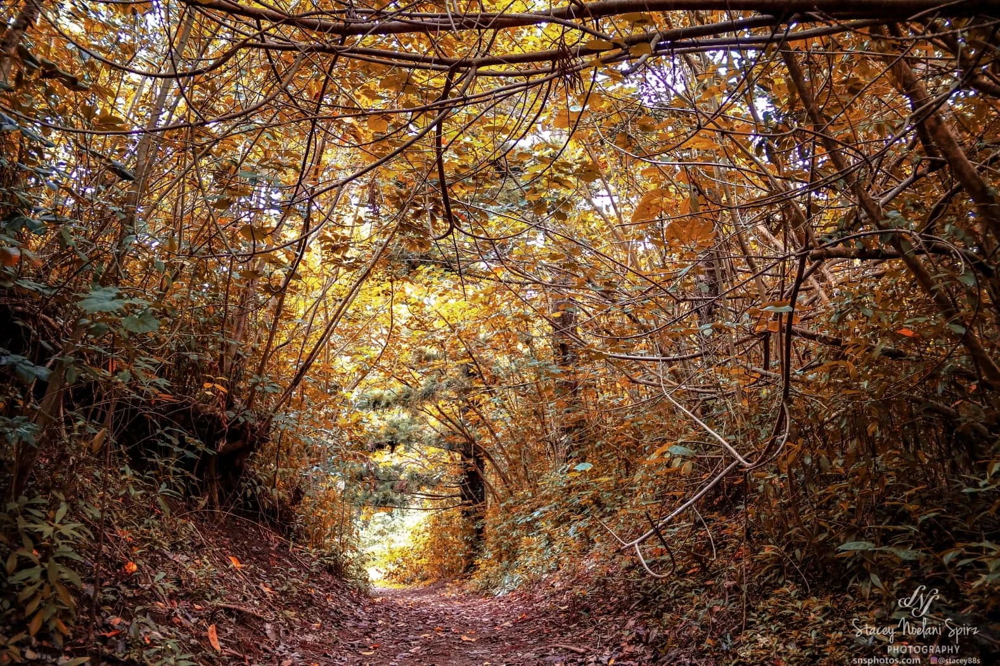

Oʻahu · Hawaiʻi · and beyond
Photography through my eyes.
Real moments, beautiful places, and the little details worth remembering.
Photography by Stacey Noelani Spirz.
Explore the galleriesA view through my lens
Featured Galleries
From glowing island evenings to the little wonders of nature — take a look around.

19 photographs
Landscapes & Travel

8 photos · 2 featured stories
Portraits & Candid

11 photographs
Events & Action

12 photographs
Cars & Culture

15 photographs
Botany & Blooms

9 photographs
Nature & Wildlife

9 photographs
Close-Up & Details
Swipe on mobile · use the arrows on desktop

A LITTLE MOMENT, THROUGH MY LENS
Behind the camera
A passion for photography.
Aloha! I'm Stacey, an Oʻahu-based photography enthusiast. I love exploring what my camera can capture — from our island's sunsets and landscapes to people, wildlife, and everyday moments.
Photography is something I genuinely enjoy. I’m always learning, trying something new, and building a collection of moments that mean something to me.
A little more about meHave something in mind?
Let's capture it.
I'm open to photography requests on a donation basis. I'd love to hear your idea.